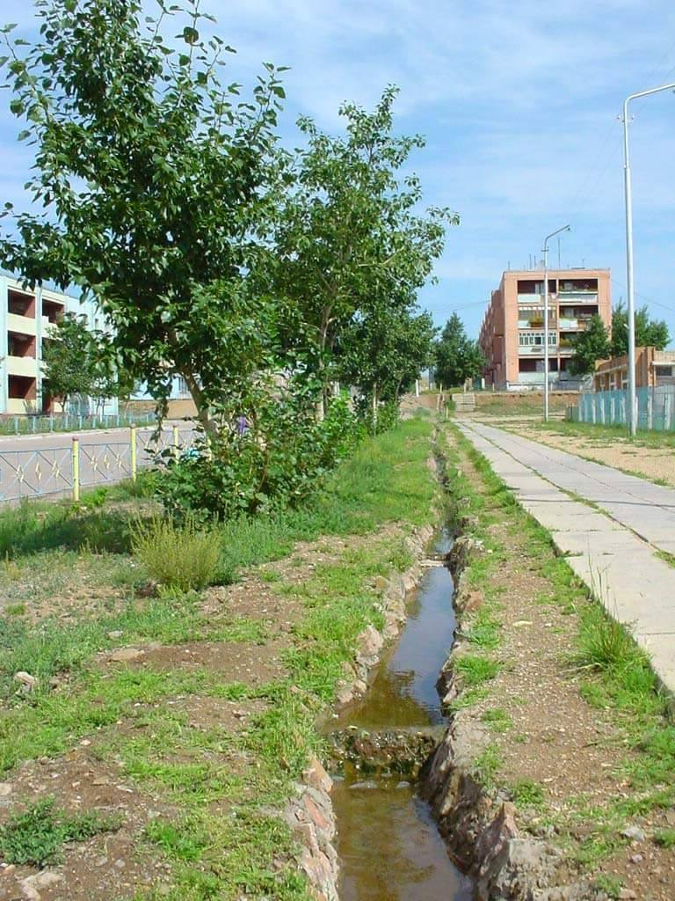
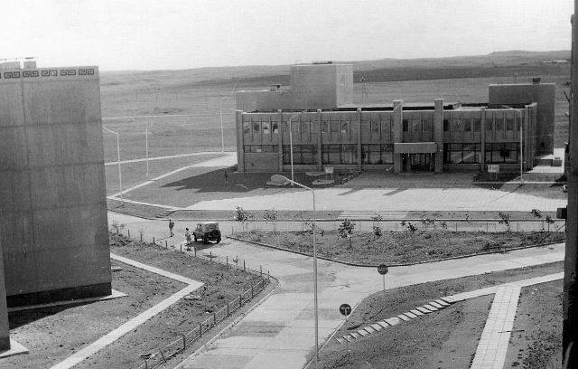
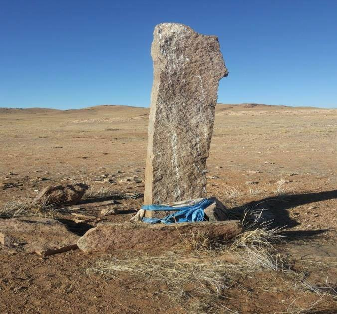
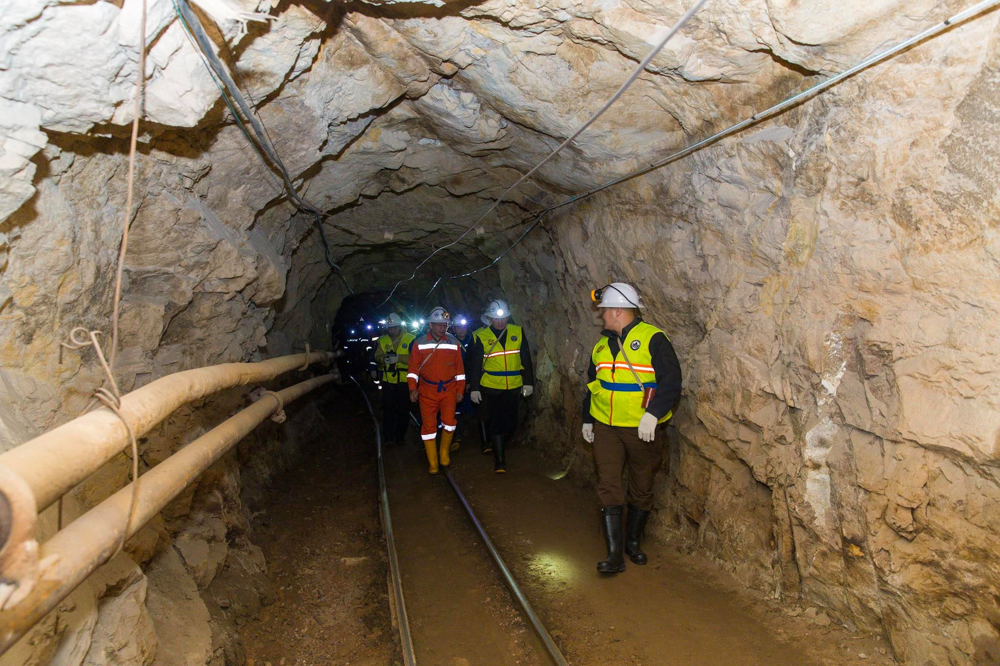
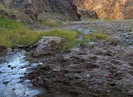
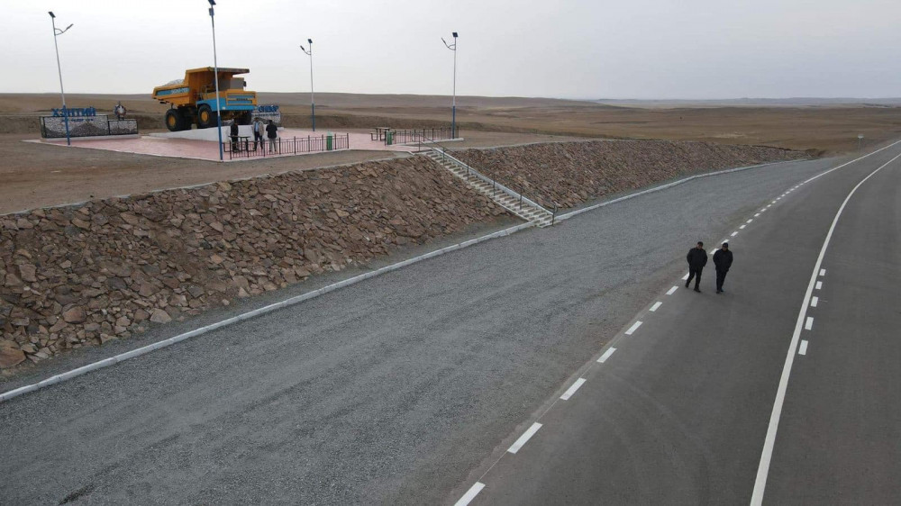

Газарзүй
Бор-Өндөр хот нь далайн түвшнээс дээш 1000-1500 метр өргөгдсөн бөгөөд физик газарзүйн хувьд Монголын дорнод талын их мужийн Халхын дундад ухаа гүвээт талын тойрогт, Байгалийн бүсийн хувьд хуурай хээрийн бүсэд тус тус багтдаг. Газар хөдлөлтийн эрчим 6 балл. Газарзүйн байршлын хувьд өмнөд хэсгээрээ Дорноговь аймгийн Даланжаргалан, бусад хэсгээрээ Хэнтий аймгийн Дархан сумтай хиллэдэг. Нийслэл Улаанбаатар хотоос 348 км, Хэнтий аймгийн төв Чингис хотоос 180 км-т оршдог. Сумын нутаг дэвсгэрийн хэмжээ 144 км². Үүнээс: Уул уурхайн зориулалттай газар 9500 га буюу 67,8%. Ойн сан бүхий газар, усан сан бүхий газар, тусгай хэрэгцээний газар 0 га буюу 0,0%. Тосгон, суурингийн газар 3000 га буюу 21,5%. Дэд бүтцийн газар 1500 га буюу 10,7%-ийг тус тус эзэлдэг.
Цаг агаар
Уур амьсгал: Хуурай хээрийн болон цөлөрхөг говь хээрийн уур амьсгал зонхилно. Дулаан зунтай чийг дутмаг бүсэд багтана. Бүх нутгаар агаарын хэмийн харьцангуй жигд тархалттай байдаг. Өвс ургамал тачирхан, чулуурхаг буюу элсэрхэг гадаргатай тул наранд халж агаарын хэмийг дээшлүүлдэг. Хамгийн их хүйтрэл 1-р сард болдог буюу дундаж температур нь цельсийн -28 градус, хамгийн их халуун 7-р сард буюу дундаж температур цельсийн +25 градус болдог. Агаарын температурын сарын дундаж нь бүх нутгаар 8-13 градус байдаг ба олон жилийн дунджаар 1,5 градусаар дулаан байна. Жилд дунджаар 200 орчим мм тунадас унадаг. Нутгийн ноёлох салхи баруун хойноосоо ихэвчлэн салхилдаг ба хамгийн их салхи шуургатай үе 3, 4, 5-р сар юм. Жилийн дундаж салхины хурд 6-8 м/с.
Түүх
Жоншны ордын нөөцийг ЗХУ-ын геологичид 1950-иод онд нээн илрүүлжээ. 1973 онд Зөвлөлт Монголын хамтарсан үйлдвэр байгуулагдсан бөгөөд одоо 51%-г Монгол, 49%-г Оросын засгийн газар эзэмшдэг. Бор-Өндөр хот нь анх БНМАУ-ын АИХ-ын тэргүүлэгчдийн 1981 оны 10 сарын 14-ний өдрийн 347-р зарлигаар Хэнтий аймгийн "Хэрлэн хороо" болон байгуулагдсан бөгөөд УИХ-ын 1994 оны 36-р тогтоолоор "Хэрлэн хот", УИХ-ын 1995 оны 7 сарын 3-ний өдрийн 55 дугаар тогтоолоор Хэнтий аймгийн харьяа "Бор-Өндөр" нэртэй аймгийн зэрэглэлтэй хот, улмаар УИХ-ын 2012 оны 2 сарын 9-ний 15-р тогтоолоор Бор-Өндөр сум байгуулагдсан.
Түүхийн дурсгалт газрууд
Бор-Өндөр сумын 6 дугаар багийн нутаг дэвсгэрт түүхийн дурсгалт газрууд оршдог. Эртний булш бунхан, хиргисүүр болон олон овоот, зугаалгын хад, хүслийн мод, Далантүрүү рашаан, Агуйт зэрэг олон сайхан байгалийн үзэсгэлэнт газар байдаг.
Дэд бүтэц
Бор-Өндөр хот нь төмөр замын сүлжээнд холбогдсон. Мөн 43 км зайд байх Дархан сумын төв болон 144 км зайд байх Өндөрхаан хоттой сайжруулсан шороон замаар холбогдоно. Мөн 43 км зайд орших, Дорноговь аймгийн Хажуу-Улааны уурхай, 65 км зайд орших Иххэт сум, Айраг сум, 59 км зайд орших Даланжаргалан сумд хүртэл сайжруулсан шороон зам бий. Даланжаргалан сумаар дамжин хатуу хучилттай засмал замын сүлжээнд холбогдож Улаанбаатар хот хүрнэ. Багануур-Чойрын зүүн бүсийн 110 кв-ын өндөр хүчдэлийн сүлжээнд холбогдсоны дээр МЦХК, Мобиком, Скайтелийн,Юнител, Жи-Мобайлын үүрэн телефоны компаниуд үйл ажиллагаа явуулж, интернэт, шилэн кабельд бүрэн нэвтэрсэн.
Сумын байгаль орчин, ан амьтан, хөрс ургамал
Хөрсний шинж чанар: Бор-Өндөр сумын нутаг дэвсгэрт тархсан хөрсийг шинж чанар, газарзүйн байршил, хөрс үүсгэгч нөхцөлөөр нь: 1. Долгирхог тал, хээрийн ба өргөн хөндийн хөрс 2. Голын хөндийн, нугын хээршсэн хөрс 3. Уулархаг, уулын хөрс 4. Хээрийн элсэрхэг , хүрэн хөрс гэж хуваана. Долгиорхог хээр талын ба өргөн хөндийн хөрс зонхилох хувийг эзлэнэ. Ховор тохиолдох нуур тойрмын зах хэсгээр хужир марзтай хөрс тохиолддог. Түр зуурын ус тогтдог хотгоруудад шаварлаг хөрс үүссэн байна. Хуурай сайрын хөндий болон тэгш талд элсэрхэг хөрс тархсан байна. Ургамал зүйн байдал: Цахилдаг, алаг өвст, хиаг-хялганат , бужмаг , хонгорзул, улалж, бут бударгана, харгана, халгай, буурцагт өвсний төрөл зонхилно. Үетэн хялганат, хазаар өвс, хиаг хялганат, шарилж, лууль, дэрс болон амт чанар , шимт сайтай үетэн, буурцагт, алаг өвсний төрлийн ургамал зонхилно. Мөн гол, булаг, нуур тойрмын хөвөөгөөр хиаг, хазаар өвс, салхин ерхөг, дэрс, харгана, адамсын агь, хэрс зэрэг ургамал ургадаг ба сумын урд говирхог талаараа таана, мангир, хөмүүл, ерхөг, үетэн хялганат, алаг өвс, жижиг бутан үетэн, ботуульт ургамал зонхилон ургадаг байна. Нам доор хотгор газруудаар дэрс, хааяа тохиолдох булгийн дэргэд зэгс, сухай, бургас ургана. Ан амьтан: Бор-Өндөр сум нь таван хошуу малтай, уул хадаараа 30 гаруй аргаль янгир бэлчдэг, цагаан зээр бэлчээрлэдэг, цаашдаа тарвага нутагшуулах зорилготой байна.
Цаашид хөгжүүлэх боломжтой үйлдвэрлэл үйлчилгээ, сумын хэтийн хөгжлийн төлөвийн талаарх мэдээлэл
Бор-Өндөр сум орчмын нутаг дэвсгэрийн өнөөгийн судалгаанд тулгуурлан ашигт малтмалын ордыг ашиглан уул уурхайн үйлдвэрлэл түшиглэх, мал аж ахуйн түүхий эдэд түшиглэн малын гаралтай бүтээгдэхүүн боловсруулах жижиг дунд үйлдвэрлэл хөгжүүлэх, түүхэн дурсгалт газрууд, амралт, рашаан сувилалд тулгуурласан дотоод гадаадын аялал жуулчлалыг хөгжүүлэн эргэн тойрон дахь сумдын эдийн засагт нөлөөлөхүйц бичил бүсийн төв болгон хөгжүүлэх хэтийн төлөв байна. Энэ ажлын хүрээнд хийгдсэн хамгийн том алхам бол “Бор-Өндөр” сум байгуулалтын нэгдсэн төслийг Монгол орныг бүсчлэн хөгжүүлэх үзэл баримтлалтай уялдуулан боловсруулж, Монгол Улсын Дэд Бүтцийн Хөгжлийн сайдын 1996 оны 10 дугаар 29-ний өдрийн 316 дугаар тушаалаар батлуулсан юм. Энэхүү төсөл нь Бор-Өндөр орчмын бичил бүсийг хөгжүүлэх төсөл, Бор-Өндөр сумын ерөнхий төлөвлөгөө, Бор-Өндөр сумын нутаг дэвсгэрийн хот байгуулалт-эдийн засгийн үнэлгээ гэсэн үндсэн 3 хэсэгтэй бөгөөд дагалдах зураг төслийн хамтаар хийгдсэн байдаг.